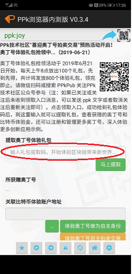
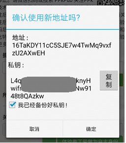
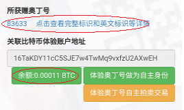

首先请确认已安装好PPk浏览器安卓版最新版的应用（0.3.4版以上），运行应用后将显示如下图所示：

在上图红圈所示处，复制粘贴输入通过微信关注PPk公众号获得的礼包提取码，然后点击“马上提取”按钮，系统将提取对应礼包，成功后将提示该礼包所包含的比特币地址信息，如下图所示：

注意：请复制备份好提示备份的私钥，一旦丢失，将无法恢复。
点击“复制”按钮将私钥复制备份好后，勾选“我已经备份好私钥”，再点击“确定”按钮即可将礼包导入到当前应用中使用， 系统将显示该礼包对应赠送的奥丁号和比特币体验金数额，如下图所示：

看到如上图红圈提示的奥丁号和余额，就说明礼包已经成功提取，赠送的奥丁号和体验金就完全归用户所有了，可以自由转出，也可以利用体验金注册更多奥丁号，体验更多功能，了解其作为新兴数字资产的潜力。具体操作说明请点击这里（https://ppkpub.github.io/docs/help_ppkbrowser/ ）查看。